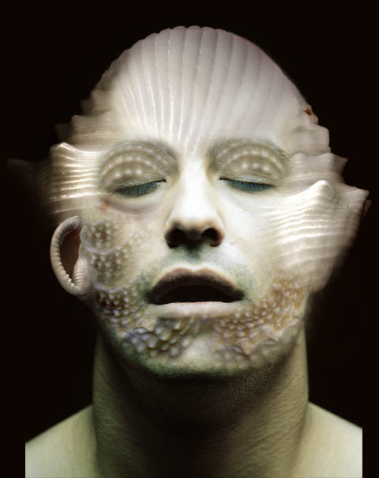

Gulnur Guvenc
chtulhu people
Gulnur Guvenc
chtulhu people
Gulnur Guvenc is an architect and graphic design artist in Turkey. She writes, "These images are made from several scanned seashells, three photographs of a friend, some happy hours with Photoshop, and a little bit of lovecraft inspiration." The inspiration is tempered, or fevered, by a Byzantine imagination.Image #d10
